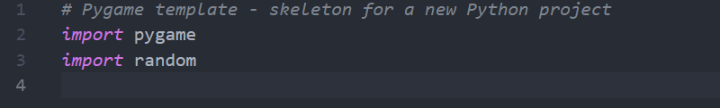
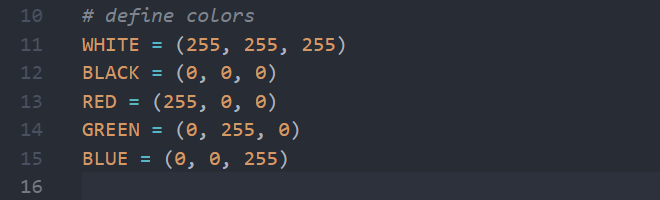
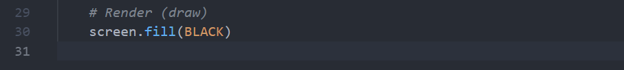
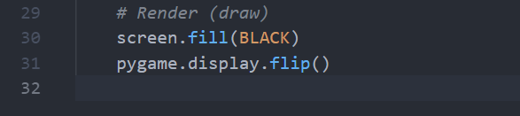
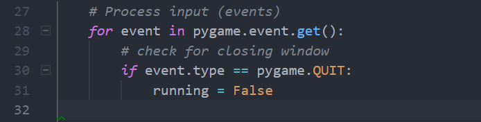

Pygame Tutorial 1-1: Setting Up Your Project
This is the first lesson of our tutorial series on programming games with Pygame. It is intended for users who are completely new to the Pygame library and are looking for a quick and easy way to get started. Intermediate Python skills are required.
A video version of this tutorial can be seen below:
Introduction to Pygame
Pygame is a library available for Python that allows programmers to build games. Bear in mind that it is not necessary to use Pygame to create games, but it will greatly simplify the process. As with all libraries, it has its own unique status and rules.
Anatomy of a Game
Every game that you create, regardless of what programming language you use will have the following:
- Game Loop that will house most of the program.
- Processing input section that will obtain input from the user (either mouse clicks or keyboard input; advanced games may even use audio or motion detection)
- Rendering/drawing section that will display everything on the screen.
- Update section that is responsible for updating events that occur within the game (i.e. Player movement).
Building a Template for Use in Pygame Projects
Now that we know everything that we need in our game, we can begin constructing a simple program that we can use to start any Pygame project. This program will do nothing but open a window and run a game loop. This template will serve you well in any future Pygame projects.
Before the Game Loop - Adding Settings and Initializing Pygame
Before starting any project in Pygame you need to import the Pygame package into your program. To do this just type "import pygame" at the top of your python file. Since most games involve some use of a random property (e.g. Random spawns, random items, random enemies, etc.), it is a good habit to import the random package as well:
After importing the libraries, it is also a good idea to specify settings for our game window. This includes the width and height of the window along with the number of frames that will appear per second:

After specifying our screen settings, we need to create a pygame window:

The last bits of code before the game loop will concern the colors used in the render section of the game. Pygame uses the RGB color format (R, G, B). Red, green and blue are known as the primary colors of the universe (forget what your art teacher told you!). By combining the colors in specific ratios, we can make any imaginable color. Each pixel on a computer screen is made up of these three colors.
Each of these primary colors have a value between 0 (off) and 255 (100% on), so there are 256 possibilities for each of the three primary colors. In total, there are 16,777,216 colors that a computer can display (256 x 256 x 256).
We will define the primary colors, as well as black and white, underneath our screen settings:
Now we have to make the game loop. Our game loop will controlled by a variable called running which we will set to "True" initially. This way, we can close the game by simply setting running to "False". The while statement will be used to create the loop:

Inside the Game Loop
The Render/Draw Section
As stated previously, this section is responsible for the stuff that appears on the pygame window. Since we have already defined some colors above, we can use one of these colors as background to fill our screen with. This can be accomplished with the "screen.fill" function.
After using the "screen.fill" function, it is advised to use another function called "pygame.display.flip()". The reason for this is because of the way computer displays work. Changing a pixel on the screen means telling the GPU to tell the monitor to change the actual pixel. This can be a very slow process, which means that you can expect heavy delays when you have lots of things to draw. "pygame.display.flip()" fixes this by implementing something known as "double-buffering".
"Double-buffering" sounds complicated, but it can be explained by a simple analogy. Image if you had a double-sided whiteboard, and you can flip the whiteboard to show one side or the other. The front will be shown to everyone in the audience (in game terms, the screen the player sees), while the back is hidden and only only you can see it (in game terms, you would be the computer). Rather than writing a letter on the board and then showing it to the audience each time, you could write multiple lines of text and then show it to the audience (which would significantly reduce time). In computer terms, this means that in every frame, we do all our drawing on the back side - every character, every bullet, every color, etc. Then, when we're done, we flip the board over and show the new frame. This means that we are doing the slow process of changing the display once every frame and not for every single thing on the screen.
The "pygame.display.flip()" function runs last, after everything has drawn:
Input/Events Section
Since this is just a template, and we don't actually have a game just yet, we can't really specify what keys or mouse buttons or controls we want to listen for. However, there is one crucial event that we need to setup: exiting the game.
If you tried to close the window right now, you would notice that it is un-closable. Clicking the 'X' does nothing. The reason for this is because closing the window counts as an event, and we need to tell our program to exit once it detects that event.
Events can happen at any point in time, regardless of where the program is in it's loop cycle. Since no input can be ignored, pygame stores all events in a list that have happened since the last frame. That way, if the player is pressing a lot of buttons, you can know about all of them. Since the events are in a list, you will need a for loop to look at all of them.
The pygame.QUIT event is used to detect if the user is trying to close the window.
Controlling FPS
Since we have no objects appearing in our game window, we don't need to include anythin in the 'Update' section yet, but we still need to set the FPS setting of our game. This is done through the "clock.tick()" function. The tick() function tells pygame to figure out how long it takes to make the whole frame to last the right amount of time. Setting FPS to 30 means that each frame should last 0.03 seconds. If the loop code takes only takes 0.01 seconds, pygame will wait 0.02 more seconds before continuing. We will set the FPS of our game right after we create the game loop:

The Pygame Template - Draft I
After including all of the sections specified above, we are left with the following code: